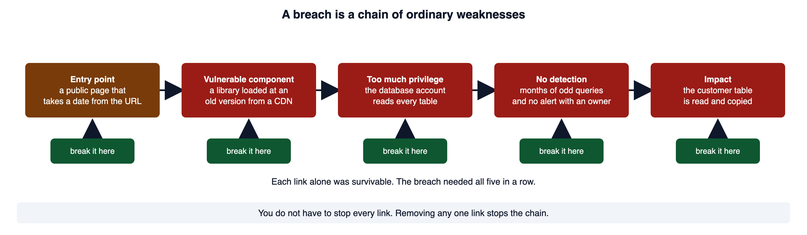
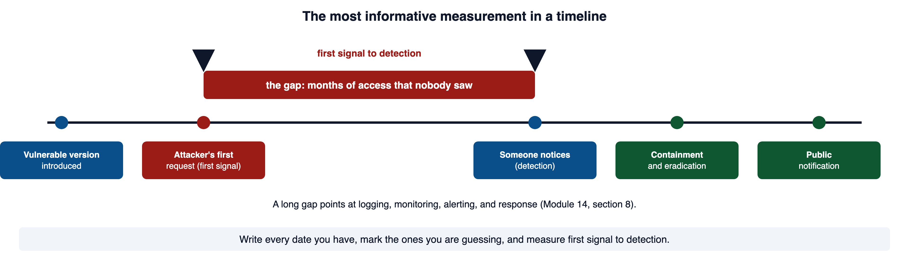
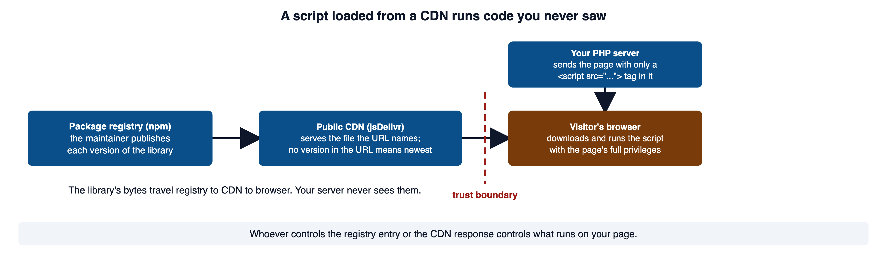
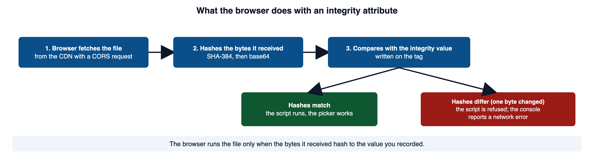
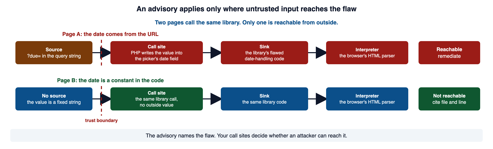
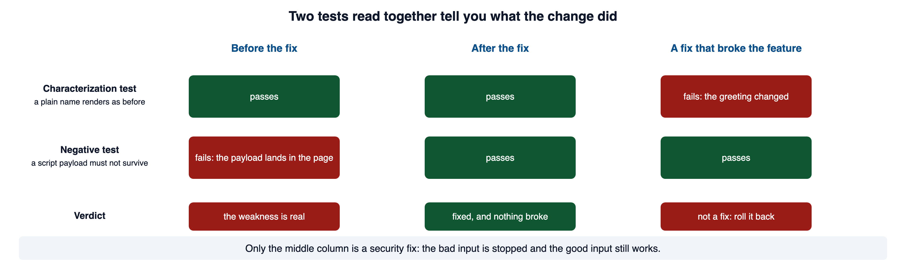

A developer replaces repeated output calls with a new helper. The page still loads, but the helper changes how untrusted text reaches the browser. This module uses breach analysis, dependency decisions, and regression evidence to review changes that look routine.
Read this page with your course environment open, so you can type each example into a small PHP file and watch what it does. Red code blocks show a shape to recognize and never ship. Green code blocks show the pattern to copy.
1Required reading
These three are required reading for the module. This page teaches everything the assignment and the quiz need; the readings give the same material in the industry's own words, which is what an advisory, a bug report, or a postmortem will use.
- OWASP Top 10:2025 A03 Software Supply Chain Failures. The risk category this module belongs to. It covers more than old library versions: the build tools, the registries, and the way software is distributed and updated.
- OWASP Vulnerable Dependency Management Cheat Sheet. The operative reference for sections 5 through 7. It walks through what to do when a dependency has a known flaw, case by case.
- CLARK: Software Supply Chain Security: Dependency Management (Akond Rahman, Auburn). Slides on the same ground from a university course. CLARK needs a free account.
The module's handout is the dependency advisory that application security sent the portal team. Section 7 teaches how to answer one.
2How separate weaknesses combine into a breach
A major incident is rarely one dramatic bug. It is a chain of ordinary weaknesses. Each one could have been survived on its own. Lined up, they are not.
The same ingredients show up in most incidents: an exposed entry point, a component with a known flaw, weak authentication, too much privilege, no segmentation, no detection, slow containment, and incomplete recovery. Most incidents are some ordering of that list.
Here is a composite incident. It is not a specific company, and the examples below return to it. An online retailer discloses that an attacker read its customer table. A public page took a date from the URL and handed it to a third-party date library. The library was loaded from a public CDN at an old version with a published advisory. The flaw in the library gave the attacker a way to run requests as a signed-in user. The database account behind the page could read every table. The odd queries ran for months. Nobody had an alert.

Open full-size image (opens in a new tab)Case analysis asks two questions, and the second one is where the learning is. The first is "what weakness was exploited?" The second is "which conditions let that weakness become a major impact?" A good case study spends most of its effort on the second.
The OWASP Top 10 entry in section 1 gives the same picture at the industry's scale. Its example scenarios include the 2025 Shai-Hulud npm worm, which it describes as the first self-propagating npm worm: it harvested data from developer machines and used stolen npm tokens to publish malicious package versions. Unit 42's analysis of the Shai-Hulud attack is the primary report: the malicious versions ran a post-installation script, stole npm and cloud tokens, and used them to infect more packages. One phishing campaign became more than 500 poisoned package versions, one link at a time.
3Root cause versus the proximate bug
The bug that got exploited is almost never the reason the incident happened. It is the last link. The reason lives in the conditions that let that link exist and go unnoticed.
Root-cause thinking has one engine: keep asking why. The technique is called the five whys, and the number is not the point. You stop when the next answer is a process or a design decision rather than another line of code.
A case study is only as honest as its separation of what is known from what is guessed. Sort every statement into one of three types before you build a conclusion on it.
| Statement | Type | Basis |
|---|---|---|
| The retailer disclosed unauthorized access to the customer database on the stated date | verified fact | the company's own incident notice |
| Initial access used the library path named in the advisory | inference | fits the advisory and the timeline; no forensic record confirms it |
| One careless developer caused the breach | unsupported conclusion | no evidence offered; the conditions were organizational |
Prefer primary sources: incident notices, regulator findings, court filings, maintainers' advisories, and technical postmortems. News summaries are useful for leads, and they often turn uncertainty into false confidence. The most common error is the third row. A plausible cause stated without evidence becomes the accepted story within days, and the real cause stops being investigated. Writing "unsupported conclusion" next to your own favorite theory is the discipline that keeps the analysis honest.
The other half of the analysis is a timeline. Capture each of these with exact dates where you have them and a stated range where you do not: when the flawed component was introduced, when it became exposed, first access, privilege changes, data access, the first observable signal, detection, containment, eradication, recovery, and public notification.

Open full-size image (opens in a new tab)The single most informative measurement is the gap between the first observable signal and detection. A long gap points straight at logging, monitoring, alerting, and response, which Module 14, section 8 named as four separate jobs. That gap usually explains the difference between an incident and a catastrophe.
The post-incident meeting that produces these answers is the blameless review from Module 02, section 10. Its subject is the conditions, never the person. Sansec's report on the polyfill.io attack is a primary source you can practice the fact-versus-inference table on: it states what was observed on more than 100,000 sites and what the injected code did, and it marks its own updates by date.
4From contributing cause to control
Once you have the contributing conditions, each one names a control, and each control has a job. Naming the job stops a recommendation list from becoming a wish list.
Those four names line up with four of the functions in the NIST Cybersecurity Framework: Protect, Detect, Respond, and Recover. The table below maps each condition in the composite incident to a control and its function.
| Condition | Control | Function |
|---|---|---|
| Library loaded at an unknown version and never updated | an inventory, a pinned version, advisory monitoring, a timely update | preventive |
| Script served by a CDN the team does not control | a recorded integrity hash so the browser refuses a changed file | preventive and detective |
| Database account reads every table | a least-privileged account | limiting |
| Repeated exploitation raised no alert | structured events and an alert with an owner | detective |
| No tested restore path | protected backups and a rehearsed restore | recovery |
NIST Cybersecurity Framework: the five functions defines Protect as the safeguards, Detect as the activities that identify a cybersecurity event, Respond as the action taken on a detected incident, and Recover as restoring what was impaired.
5Third-party code is attack surface
Most of the code your application runs, you did not write. A PHP application inherits code, and inherits trust, from a long list of places.
- the PHP runtime and its extensions;
- Composer packages, and the packages those packages need;
- JavaScript and CSS files loaded from a CDN;
- the web server, the database, and the operating system's libraries;
- developer tools and editor extensions;
- code generated by an AI assistant, or copied from documentation and forums;
- the registries that serve packages, and the CDNs that serve files; and
- the build and deployment steps that turn all of it into what runs.
Two weaknesses in this space have their own CWE identifiers, and both appear in advisories. Depending on a component with a known flaw is dependency on a vulnerable third-party component (CWE-1395). Shipping a component nobody maintains any more is use of unmaintained third-party components (CWE-1104); when a flaw is found in it, no fix is coming.
A script loaded from a CDN deserves its own look, because it is the shape the portal has.

Open full-size image (opens in a new tab)Your PHP server writes one <script src="../modules/module-16/..."> tag. The visitor's browser fetches the file from the CDN and runs it with the page's full privileges: it can read the page, read form fields, and send requests as the signed-in user. Your server never sees those bytes. Whoever controls the registry entry, or the CDN's response, controls what runs on your page. MDN's supply chain page says it plainly: if an attacker can get control of the CDN's domain, they can replace the script with a malicious one and compromise your site.
The OWASP Top 10 category grew for a reason. Earlier editions called this "using components with known vulnerabilities," which was about the versions you installed. A03:2025 covers the whole chain, because poisoning the pipeline that builds or serves software reaches every deployment at once and looks legitimate. A malicious package is a different case from an old one: the version is current, the advisory feed is quiet, and the defense is integrity rather than patching.
OWASP Third Party JavaScript Management Cheat Sheet names the compromise of the third party's server as the single greatest risk and says third-party code runs with the same privileges the user has. MDN: Supply chain attacks is the browser-side description and the source of the CDN sentence quoted above. CISA: Software Bill of Materials is the source of the SBOM definition.
6Pin the version and verify the bytes
You cannot answer an advisory about a version you cannot name. The first requirement is that a page load the same code every time, so the version you tested is the version your visitors run. Loading code from a CDN without checking that it is the code you expect is the failure OWASP names software or data integrity failures (A08:2025): the page says applications rely on libraries from content delivery networks without verifying them.
Name the version in the URL
jsDelivr's URL format is /npm/package@version/file. Leave the version out, and the CDN serves the newest one. jsDelivr's own documentation marks that as not recommended for production. A version range such as @4 moves whenever a new 4.x release appears, so it does not name a version either.
Here is the shape to recognize. The URL has no version and no integrity check.
<script src="https://cdn.jsdelivr.net/npm/flatpickr"></script>Vulnerable. Do not use this pattern.
That tag runs whatever the CDN serves today. You cannot say which version your visitors ran yesterday.
Record the hash of the bytes
Pinning names a version. It does not prove the file you received is that version. A changed file at the same URL still loads. Subresource Integrity (SRI) closes that gap. Shipping code the browser downloads and runs without checking its integrity is download of code without integrity check (CWE-494).

Open full-size image (opens in a new tab)The value is the algorithm's name, a dash, and the base64 form of the hash. MDN lists sha256, sha384, and sha512 as the allowed prefixes. To produce it, download the exact file you intend to pin, then hash it. The command below is the one MDN gives. It was run on flatpickr.min.js from version 4.6.13, fetched from https://cdn.jsdelivr.net/npm/flatpickr@4.6.13/dist/flatpickr.min.js.
openssl dgst -sha384 -binary flatpickr.min.js | openssl base64 -A5JqMv4L/Xa0hfvtF06qboNdhvuYXUku9ZrhZh3bSk8VXF0A/RuSLHpLsSV9Zqhl6openssl dgst -sha384 computes the SHA-384 digest. -binary outputs the raw bytes instead of hexadecimal text, because the browser expects base64 of the raw digest. openssl base64 -A encodes those bytes as one line. Prefix the result with sha384- and you have the attribute value.
PHP produces the same value, which is a useful check that you ran the command on the right file.
<?php
// WHY: The integrity value must be derived from the exact bytes of the approved asset version.
$hash = hash_file('sha384', 'flatpickr.min.js', true); // true: raw bytes, not hex
echo 'sha384-' . base64_encode($hash), PHP_EOL;Secure. Why: The integrity value must be derived from the exact bytes of the approved asset version.
sha384-5JqMv4L/Xa0hfvtF06qboNdhvuYXUku9ZrhZh3bSk8VXF0A/RuSLHpLsSV9Zqhl6Now the tag names the version and carries the hash.
<script src="https://cdn.jsdelivr.net/npm/flatpickr@4.6.13/dist/flatpickr.min.js"
integrity="sha384-5JqMv4L/Xa0hfvtF06qboNdhvuYXUku9ZrhZh3bSk8VXF0A/RuSLHpLsSV9Zqhl6"
crossorigin="anonymous"></script>Secure. This is the pattern to copy.
The third attribute is not optional.
A stylesheet loaded from a CDN takes the same three attributes on its <link> tag. MDN's supply chain page says you can and should use integrity for stylesheets as well as scripts. A change that covers only the script tag has covered half the finding.
SRI answers one question: did the browser get the bytes I reviewed? It says nothing about whether those bytes are safe. If you pin and hash a version with a known flaw, you have the flaw, verified. The advisory question is section 7.
For PHP packages the same two ideas live in Composer. composer.json holds constraints such as ^3.7, which Composer reads as any 3.x version from 3.7 up. composer.lock records the exact versions that were installed, and the Composer manual says to commit it for a project. composer install uses the lock file; composer update rewrites it. Composer also has an audit command that checks the lock file against the advisories Packagist publishes. Reading its output is the start of section 7, never the end.
MDN: Subresource Integrity is the source for the attribute format, the three algorithms, the openssl command, the CORS requirement, and the network error on a mismatch. MDN: crossorigin documents anonymous and use-credentials, and that with no attribute CORS is not used at all. jsDelivr documentation gives the /npm/package@version/file format and the production warning. W3Schools: HTML script integrity attribute is an independent description of the attribute. OpenSSL: openssl-dgst documents -binary. PHP Manual: hash_file documents the raw-bytes flag. Composer: Basic usage covers the lock file and install versus update; Composer: Versions and constraints defines the caret; Composer CLI: audit documents the audit command.
7Deciding whether an advisory applies to your application
An advisory is where triage begins. It describes a flaw in a component. Whether that flaw is a vulnerability in your application depends on facts only your code can supply. Nobody outside your team can make that determination for you.
The module's handout has the shape every advisory has. It names a component, a flawed path inside it, and a condition: exploitation requires that an attacker be able to influence the value the library reads. Then it asks for two things, a reachability determination and a remediation decision with the reasoning written down.
Work through this list before you either dismiss a match or report it as confirmed.
- Is the named component, at an affected version, actually loaded?
- Is it something you asked for, or something a dependency brought along?
- Is the flawed feature used in your application at all?
- Can attacker-controlled data reach the flawed path?
- What conditions does the advisory say the attack needs?
- What can the attacker do if it works: run script in the visitor's browser, read a table, run a command?
- Is a fixed version available, and does your code still work with it?
- Can a temporary control reduce exposure while you upgrade?
- What evidence will confirm the fix is actually deployed?
Question 4 decides most cases, and it uses the words from Module 01, section 5. Name the parts. The source is the untrusted value. The trust boundary is where it enters the application. The sink is the library call that receives it. The interpreter is what finally reads the library's output, here the browser's HTML parser.

Open full-size image (opens in a new tab)Here are two call sites for the same picker library. The advisory says a value placed in the library's date field can reach a DOM sink inside the library and be read as markup. The first page takes the date from the query string and hands it straight to the library.
<?php
// WHY: Untrusted output can become HTML structure instead of the intended literal text.
// invoices.php: the due-date filter. ?due= comes from the query string.
$due = $_GET['due'] ?? '';
?>
<input type="text" id="due" name="due" value="<?= htmlspecialchars($due, ENT_QUOTES, 'UTF-8') ?>">
<script>
flatpickr('#due', { dateFormat: 'Y-m-d', defaultDate: <?= json_encode($due) ?> });
</script>Vulnerable. Why: Untrusted output can become HTML structure instead of the intended literal text.
json_encode makes the value a correct JavaScript string, so nothing breaks out of the script block. The value then arrives inside the library exactly as the attacker typed it. If the library's date handling writes it into the DOM as markup, the flawed path is reachable from the URL. That is a yes to question 4, with the file and the line.
The second page uses a constant.
<?php
// WHY: Serialization represents structured values as data rather than hand-built executable syntax.
// report.php: the report always starts on the first of the quarter.
$start = '2026-01-01';
?>
<input type="text" id="start" name="start" value="<?= $start ?>">
<script>
flatpickr('#start', { dateFormat: 'Y-m-d', defaultDate: <?= json_encode($start) ?> });
</script>Secure. Why: Serialization represents structured values as data rather than hand-built executable syntax.
No outside value reaches the call. The advisory describes a flaw in code this page loads, and the flaw is not reachable here. You say so, and you cite report.php and the line of the call.
For the first page, one control removes reachability without touching the library. Validate the value against the only shape a date can have, on the way in, which is Module 03's allow-list.
<?php
// WHY: Checking the date representation prevents malformed text from being handed to the date-handling library.
$due = $_GET['due'] ?? '';
if ($due !== '' && !preg_match('/\A\d{4}-\d{2}-\d{2}\z/', $due)) {
$due = ''; // not a date: the library never sees it
}Secure. Why: Checking the date representation prevents malformed text from being handed to the date-handling library.
Both errors here cost credibility. Dismissing a match without doing the work ships a real vulnerability. Reporting a match as a confirmed exploit without doing the work cries wolf, and the next real finding is trusted less. The cheat sheet in section 1 says it the same way: identify the reachable calls to affected functions and the conditions required to exploit the vulnerability.
The OWASP Vulnerable Dependency Management Cheat Sheet, linked in section 1, is the source of the reachability sentence. CWE-1395: Dependency on Vulnerable Third-Party Component is the formal entry for the condition an advisory describes. PHP Manual: preg_match documents the pattern test.
8Code with no version number
Everything in sections 5 through 7 assumes four things exist: a package name, a version, a maintainer, and a place that publishes advisories. Those four are what make dependency risk manageable. A growing share of the code in a working application has none of them: a snippet from an AI assistant, a block pasted from a forum answer, an example copied from documentation, or a file whose origin nobody wrote down. It is the same trust problem as a dependency, with every supporting mechanism stripped away.
| Safeguard | Composer package | Generated or pasted code |
|---|---|---|
| Inventory | composer.lock records it | none; it is now your code |
| Version | resolved and pinned | none |
| Advisory feed | Packagist and composer audit | none |
| Upstream fix | the maintainer publishes one | nobody is coming |
| Review | the update review and the lock-file diff | only the review you perform yourself |
The last row is the practical consequence. A flaw in a Composer package eventually reaches you through an advisory even if nobody on your team reads that code. A flaw in a generated snippet is found when someone reviews it, or it is never found.
It is tempting to say "generated code is insecure," and that claim is unstable, because generation quality shifts with every model release. The durable finding is about the reviewer.
You do not need a new technique for this. You need to stop granting an exemption. Record where the code came from, the way you record a dependency's source. Ask whether attacker-controlled data reaches it, exactly as in section 7. Write the same negative tests you write for everything else. If you cannot say what the code does and why it is safe, it is not reviewed and it is not yours.
The OWASP Secure Code Review Cheat Sheet is the review method: trace data from the sources, through processing, to the sinks, and check the controls at each trust boundary. It applies to a package and to a pasted snippet alike.
9Refactoring insecure code without changing behavior
Refactoring changes the structure of code without changing what it does. A security repair deliberately changes unsafe behavior. Those are two different operations. Keeping them separate, in your head and in your commits, is what lets a reviewer trust the change.
Here is a small function with a familiar flaw. It pastes a stored display name straight into markup, which is cross-site scripting (CWE-79, Module 05).
<?php
// WHY: Concatenating an untrusted greeting into HTML allows its text to create markup.
function renderGreeting(string $displayName): string
{
return "<p>Welcome back, " . $displayName . "</p>";
}Vulnerable. Why: Concatenating an untrusted greeting into HTML allows its text to create markup.
Before touching it, write both tests. assert throws an AssertionError when its condition is false, so a failing test stops the script with a message that names the line.
<?php
// WHY: A characterization check preserves the established legitimate output while security behavior changes.
// Characterization test: a plain name must render exactly as it does today.
assert(renderGreeting('Avery') === '<p>Welcome back, Avery</p>');
echo "characterization: pass\n";
// Negative test: a stored payload must not survive into the markup.
$stored = '<script>steal()</script>';
assert(str_contains(renderGreeting($stored), '<script>') === false);
echo "negative: pass\n";Secure. Why: A characterization check preserves the established legitimate output while security behavior changes.
Run them against the vulnerable function first.
characterization: pass
Fatal error: Uncaught AssertionError: assert(str_contains(renderGreeting($stored), '<script>') === false) in t1.php:13The characterization test passes, because ordinary names already render correctly. The negative test fails, because the payload lands in the page intact. That failure is evidence the weakness is real. Now make the smallest change that closes it: encode the value at the output, so the browser reads it as text.
<?php
// WHY: HTML encoding represents special characters as data at the HTML output location.
function renderGreeting(string $displayName): string
{
$safe = htmlspecialchars($displayName, ENT_QUOTES | ENT_SUBSTITUTE, 'UTF-8');
return "<p>Welcome back, {$safe}</p>";
}Secure. Why: HTML encoding represents special characters as data at the HTML output location.
Run the same two tests again, then print the hostile case.
characterization: pass
negative: pass
<p>Welcome back, <script>steal()</script></p>
Open full-size image (opens in a new tab)The same two tests work for every weakness the course taught. Here is a second one. A page builds a file path from a name in the request, which is path traversal (CWE-22).
<?php
// WHY: Concatenating a requester-selected filename permits path components outside the offered report choices.
function reportPath(string $name): string
{
return '/var/app/reports/' . $name . '.pdf';
}Vulnerable. Why: Concatenating a requester-selected filename permits path components outside the offered report choices.
<?php
// WHY: Characterization checks preserve the documented report mappings during refactoring.
// Characterization test: the two names the page offers still map to the same files.
assert(reportPath('monthly') === '/var/app/reports/monthly.pdf');
assert(reportPath('quarterly') === '/var/app/reports/quarterly.pdf');
echo "characterization: pass\n";
// Negative test: a traversal name must not produce a path that climbs out of the folder.
assert(str_contains(reportPath('../../etc/passwd'), '..') === false);
echo "negative: pass\n";Secure. Why: Characterization checks preserve the documented report mappings during refactoring.
characterization: pass
Fatal error: Uncaught AssertionError: assert(str_contains(reportPath('../../etc/passwd'), '..') === false) in t3.php:13The fix is the allow-list from Module 03, section 4: the request may choose from a fixed set of names, and the name is never part of the path.
<?php
// WHY: A fixed mapping accepts only the report choices the application intentionally exposes.
function reportPath(string $name): string
{
$files = ['monthly' => 'monthly.pdf', 'quarterly' => 'quarterly.pdf'];
if (!array_key_exists($name, $files)) {
throw new InvalidArgumentException('Unknown report');
}
return '/var/app/reports/' . $files[$name];
}Secure. Why: A fixed mapping accepts only the report choices the application intentionally exposes.
characterization: pass
negative: pass, rejected with 'Unknown report'The other repairs follow the same shape. A query built by string concatenation becomes a prepared statement (SQL injection, CWE-89, Module 04). A shell command built from a string becomes a fixed command with an argument list (OS command injection, CWE-78). A scattered set of inline role checks becomes one authorization gate every caller passes through (Module 08, section 6). In each case: characterization test, negative test, the small change, and the two tests report.
refactoring.com is the source of Fowler's definition. Wikipedia: Characterization test credits the term to Feathers and gives its purpose, protecting the existing behavior of legacy code against unintended changes. PHP Manual: assert documents the AssertionError and the zend.assertions values. PHP Manual: str_contains documents the case-sensitive check the negative tests use. PHP Manual: htmlspecialchars documents the flags in the first repair.
10Making the refactor reviewable and verifiable
A fix has to be reviewed, and it has to be proven. Both go better when the change is shaped for them from the start.
Make the change reviewable. Keep one purpose per commit and leave formatting alone, because a large "security cleanup" is where a regression ships next to a fix and nobody sees it. Write a message that says what changed and why. Review every caller of the code you touched, not only the code. Commit the tests with the fix. When a dependency moved, read the lock-file diff or the changed tag, hash and all. Keep secrets out of history, including out of a commit you later revert. Have a rollback plan before you merge.
Then verify, because merging is a change event, not proof. Merged is not deployed. Deployed is not configured. Configured is not verified. A finding closes on evidence from the running system:
- the original unsafe behavior, or the negative test failing before the change;
- the characterization test passing before the change;
- the change itself;
- the negative test passing after the change, with the characterization test still passing;
- confirmation that the change is deployed and configured where visitors reach it; and
- a statement of the residual risk that remains (Module 02, section 9).
"Fixed" is a claim. The evidence makes it true, and the residual-risk line keeps the claim honest about what the fix does not cover. For the CDN case, the honest line is short: SRI proves the bytes; it does not make the bytes safe.
The OWASP Secure Code Review Cheat Sheet, linked in section 8, describes the review of a change as a diff, which is the review this section shapes the commit for.
11Common misconceptions
✕"The flawed library is loaded, so we were breached."
Presence, reachability, exploitation, and incident are four different claims, and each needs its own evidence. A loaded component is a reason to triage, not a conclusion.
✕"A version match proves exploitation."
A match starts triage. Whether it matters depends on whether attacker-controlled data reaches the flawed path, and on how the component is used.
✕"An SBOM tells me whether I am exploitable."
An SBOM tells you where a component is used. Reachability tells you whether the flaw can be reached. Only the second decides risk.
✕"Pinning the version makes the file safe."
Pinning names the version. SRI proves the bytes. Neither says the code is free of flaws. A pinned, hashed, flawed version is the flaw, verified.
✕"SRI failed, so the hash must be wrong."
A missing
crossorigin="anonymous"produces the same console error as a wrong hash. Check the attribute before you recompute anything.✕"Update everything right away, without testing."
Patch promptly, and manage compatibility and rollback while you do. An emergency upgrade that takes the service down is its own incident.
✕"The developer caused the incident."
Analyze the technical and organizational conditions. A system where one ordinary mistake becomes a breach has more than one defect, and naming a person fixes none of them.
✕"Refactoring is complete when the existing tests pass."
Include the negative test and a residual-risk statement. Passing the old tests only shows you did not break what they covered.
✕"It came from an AI assistant, so it follows current best practice."
It arrives with no version, no inventory entry, and no advisory feed. Review it as code of unknown origin, because that is what it is.
12Check your understanding
Work these before you look at the answers.
- What does a strong case study separate, and why does that separation matter?
- What is the difference between the proximate cause and the root cause, and which one does the five-whys technique push you toward?
- In a timeline, which single measurement is the most informative, and what does a large value point at?
- Name the four control functions and give a condition each one addresses.
- What does an SBOM tell you, and what question does it not answer?
- What does pinning a version control, and what does it not control?
- Write the command that produces an
integrityvalue for a file, and say what each part does. - Why does a cross-origin tag with
integrityalso needcrossorigin="anonymous"? - An advisory matches a library the page loads. Name three of the questions you work through before calling it a vulnerability in your application.
- Compared with a Composer package, what does code from an AI assistant arrive without, and how does that change your review?
- What is the difference between a characterization test and a negative test, and why do you need both?
- A fix is merged. What evidence is still required before the finding closes?
Answers: (1) verified facts from inference and from unsupported conclusions, so each conclusion traces to evidence and a plausible guess does not become the accepted story. (2) the proximate cause is the immediate technical fault, the root cause is the condition that let it exist and go unnoticed; the five whys pushes you past the first toward the second. (3) the gap between the first observable signal and detection, which points at logging, monitoring, alerting, and response. (4) preventive stops the path, detective reveals it, limiting reduces the damage, recovery restores trusted operation; examples are a pinned and updated version, an alert with an owner, a least-privileged account, and a rehearsed restore. (5) where a component is used; not whether the flaw is reachable or exploitable in your application. (6) which version of the code enters the build; not whether that code is safe, and not whether the file received is really that version. (7) openssl dgst -sha384 -binary file | openssl base64 -A: compute the SHA-384 digest, output raw bytes, encode them as one base64 line, then prefix sha384-. (8) the browser can only hash bytes it is allowed to read, so the fetch must be a CORS request; without the attribute the file is blocked with an error that looks like a bad hash. (9) any three of: is the affected version loaded, direct or transitive, is the flawed feature used, can attacker-controlled data reach it, what conditions the attack needs, what the attacker gains, is a fixed version available, can a temporary control help, what evidence confirms deployment. (10) no inventory entry, no version, no advisory feed, and no maintainer preparing a fix; the review you perform is the only one it gets. (11) a characterization test pins today's legitimate behavior; a negative test shows the weakness and must pass after the fix; either alone leaves half the change unproven. (12) evidence from the running system that the change is deployed and configured, the negative test passing with the characterization test still passing, and a residual-risk statement.
13References and further study
The three required readings in section 1 and the pages linked through the lecture are the main references. Each entry below names what it confirms.
- CWE-494: Download of Code Without Integrity Checkcwe.mitre.org
The formal entry behind section 6: code downloaded and executed without verifying its origin and integrity.
- CWE-1104: Use of Unmaintained Third Party Componentscwe.mitre.org
The entry named in section 5: components no longer supported by their developer.
- CWE-79: Improper Neutralization of Input During Web Page Generation ('Cross-site Scripting')cwe.mitre.org
The weakness of the first repair in section 9.
- CWE-22: Improper Limitation of a Pathname to a Restricted Directory ('Path Traversal')cwe.mitre.org
The weakness of the second repair in section 9.
- CWE-89: Improper Neutralization of Special Elements used in an SQL Command ('SQL Injection')cwe.mitre.org
and CWE-78: Improper Neutralization of Special Elements used in an OS Command ('OS Command Injection'). The two other repairs section 9 names.
- MDN: script elementdeveloper.mozilla.org
Confirms that
integrityholds one or more hashes of the script and must not be set withoutsrc. - flatpickr release v4.6.13github.com
The release whose minified file section 6 hashed.
- Composer: Scriptsgetcomposer.org
Confirms that Composer runs only the root package's scripts, which is one reason the PHP ecosystem's install step differs from npm's post-install scripts in section 2.
- PHP Manual: base64_encodephp.net
The encoding step in the PHP version of the hash in section 6.
- W3Schools: HTML script tagw3schools.com
Lists
integrityandcrossoriginamong the tag's attributes, with a live editor.
Videos.